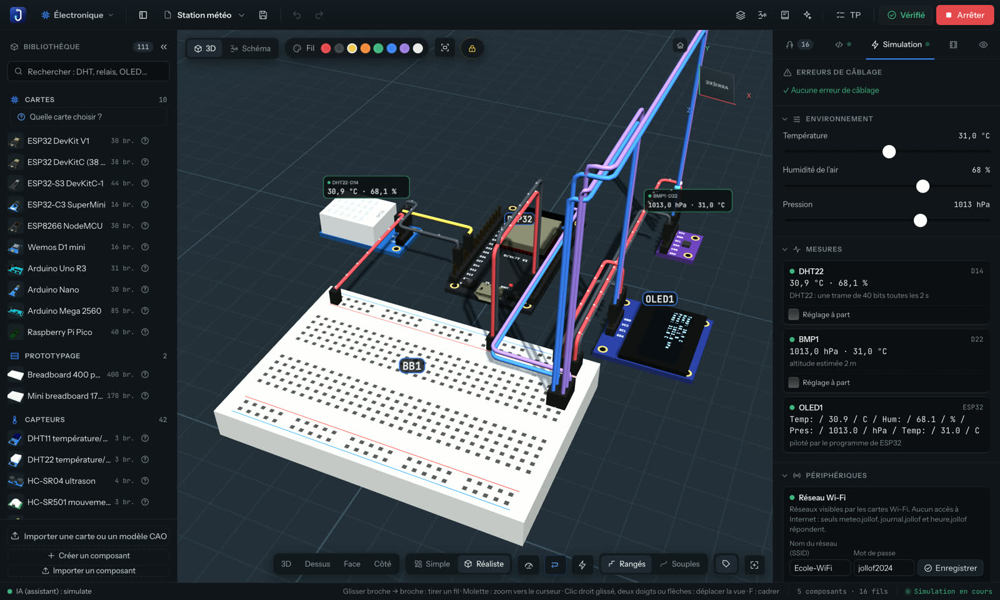
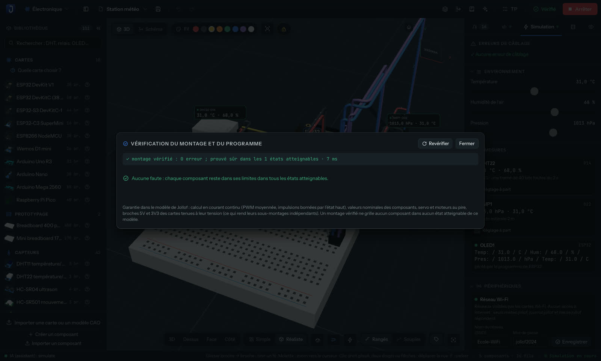
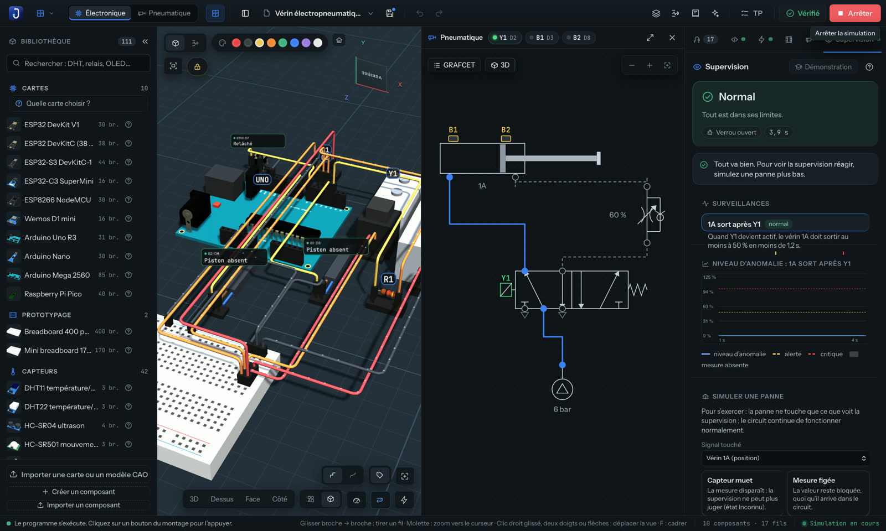
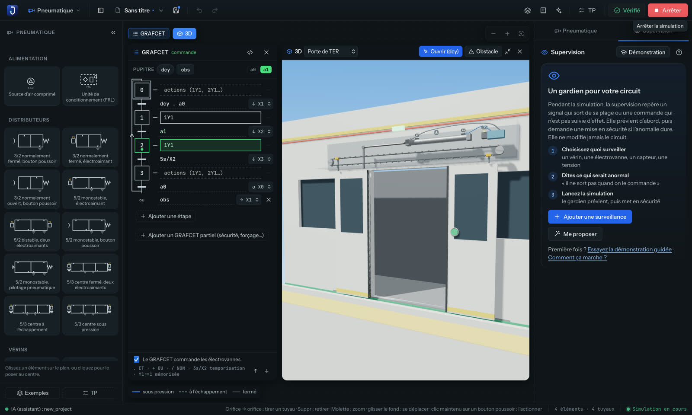
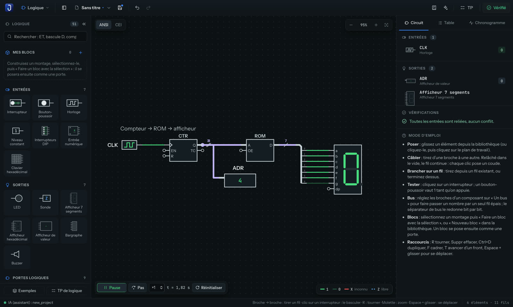
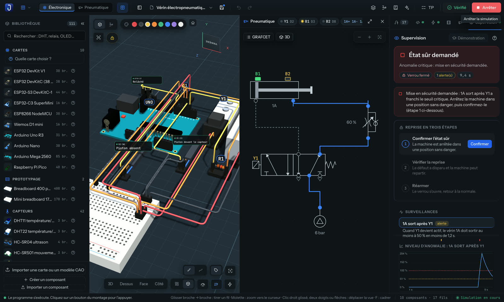
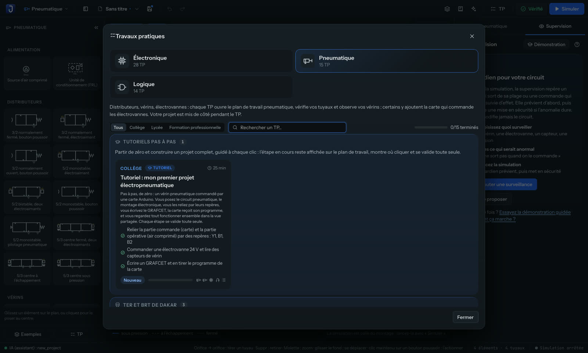

Montage en 3D
Breadboards, cartes et capteurs en 3D, câblage direct ou automatique, courant animé dans les fils, vue schéma en direct.
Gratuit · Open source · AGPL-3.0
Câblez, programmez et simulez l’électronique, la logique, la pneumatique et l’électropneumatique en 3D. Un vérificateur prouve que rien ne grille avant de passer à une vraie carte.
$ git clone https://github.com/xelaktechsn/jollof-studio
$ cd jollof-studio && npm install
$ npm run tauri dev21 secondes, tournées dans l’application réelle.
Pourquoi
Beaucoup d’élèves et d’apprentis ingénieurs n’ont ni paillasse, ni cartes, ni vérins. Jollof Studio leur donne tout cela sur un ordinateur, même ancien : on câble, on programme, on simule et on mesure comme en vrai.
Comme le compilateur Rust refuse un programme dangereux, Jollof Studio ne laisse rien partir vers le monde réel tant que le montage ou son programme ont une erreur. La simulation, elle, montre les fautes : c’est en voyant fumer qu’on apprend.
Fonctions
Breadboards, cartes et capteurs en 3D, câblage direct ou automatique, courant animé dans les fils, vue schéma en direct.
Chaque état atteignable est essayé et comparé aux fiches techniques. Diagnostics à la manière de rustc, avec code, cause et correction en un clic.
Règles « quand… alors… », blocs ou C++ Arduino ; MicroPython sur le Pico ; débogueur pas à pas, traceur et moniteur série.
51 éléments : portes, bascules, compteurs, mémoires, bus, afficheurs. Table de vérité et chronogramme, blocs réutilisables.
Distributeurs, vérins, capteurs, symboles inspirés de l’ISO 1219, GRAFCET qui génère le programme et machine en 3D qui bouge.
Une carte commande une machine pneumatique : vue partagée, électrovannes 24 V, capteurs de fin de course, tout simulé ensemble.
Un gardien observe le circuit à chaque pas et demande la mise en sécurité quand un vérin se bloque. Trois questions suffisent pour le régler.
Électronique, pneumatique et logique, avec étapes vérifiées automatiquement, quiz, mesures et un tutoriel qui part de zéro.
Téléversement par USB avec arduino-cli, moniteur série, Firmata, guide de montage en PDF, export KiCad. Bloqué tant qu’une erreur reste.
NE555, amplis, MOSFET, bobines, générateur et oscilloscope ; formes d’onde rapides calculées par ngspice.
Claude, Cursor, VS Code… pilotent l’application par le protocole MCP : poser, câbler, vérifier, simuler. Désactivé par défaut, local seulement.
Mode léger automatique, rendu à la demande, démarrage rapide. Windows, macOS et Linux.
Électronique
Posez un ESP32, un capteur et un écran, reliez les broches : l’application choisit la bonne broche, écrit le code et fait tourner le programme en temps virtuel. Les mesures s’affichent en direct.

Vérificateur
Boutons appuyés ou relâchés, relais collés, potentiomètres aux butées, chaque sortie à LOW et à HIGH : dans chaque état, le circuit est calculé et chaque composant comparé à ses valeurs nominales.
erreur[J0301]: LED1 traversée par 75 mA (30 mA au plus)
--> quand UNO D7 = HIGH
= aide : ajoutez une résistance de 220 Ω
Électropneumatique
Le montage à gauche, le schéma pneumatique à droite : la carte commande l’électrovanne, le vérin sort, son capteur répond au programme. Le projet dit lui-même quels plans de travail il montre.

GRAFCET et 3D
Écrivez le GRAFCET, l’application en tire le programme. Porte de TER, pantographe, porte de bus : la machine en 3D suit le vérin, étape par étape.

Logique
Un plan de travail 2D pour les circuits logiques : horloges, compteurs, ROM, bus et afficheurs, avec des TP qui vérifient la table de vérité, la chronologie ou l’équation.

Supervision MA-ISA
Le moniteur suit le circuit pendant la simulation, sans rien y changer. Un vérin bloqué ? Il demande l’état sûr et guide la reprise en trois étapes. Le calcul vient de la caisse Rust publiée maisa-core.

Travaux pratiques
Chaque étape est validée par l’application : un fil posé, une mesure juste, une sortie qui s’allume. Les TP « À retenir » résument l’essentiel, et un tutoriel monte un premier projet électropneumatique à partir de zéro.
Des TP tirés du transport : pantographe du TER, porte de bus du BRT, passage à niveau, feu prioritaire, compteur de voyageurs.

Télécharger
Dernière version :
Windows 10 et 11, 64 bits. L’installateur demande le français ou l’anglais.
Télécharger pour WindowsInstallateur pas encore signé : si SmartScreen s’affiche, « Informations complémentaires » puis « Exécuter quand même ».
AppImage pour toutes les distributions récentes (2022 et après), ou paquet de votre système.
Télécharger l’AppImageAppImage : rendez le fichier exécutable (chmod +x), puis lancez-le.
En préparation : l’application doit d’abord être signée et notarisée par Apple.
En attendant, elle se construit depuis les sources (ci-dessous).
Pour les développeurs
Cloner le dépôt, installer les dépendances, lancer.
git clone https://github.com/xelaktechsn/jollof-studio
cd jollof-studio && npm install
npm run tauri dev # lancer l’application
npm run tauri build # installateursOpen source
Jollof Studio est publié sous licence AGPL-3.0 : utilisez-le, étudiez-le, améliorez-le. Les contributions sont bienvenues ; une licence commerciale existe pour qui ne peut pas suivre l’AGPL.
Construit avec